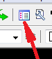

После создания шаблона чертежа его необходимо промасштабировать (если конечно вы не чертите в масштабе 1:1).
Например вы хотите выполнить чертёж в масштабе 1:100.
Программа будет откладывать размеры в натуральную величину,поэтому чтобы поместить такой большой чертёж в
наш формат вы должны увеличить его в 100 раз.
Для этого слева на панели инструментов есть кнопка "Масштабировать" (см.рис. слева).
После нажатия на кнопку левой клавишей мыши в нижней части окна в командной строке появится запрос:
— Укажите объекты для масштабирования
Выделите шаблон чертежа рамкой с нажатой левой клавишей мыши и щёлкните правой клавишей мыши.
Появится новый запрос:
— Укажите базовую точку
Щёлкните левой клавишей мыши в нижнем левом углу формата и правой клавишей мыши.
Напечатайте масштаб в ответ на появившейся запрос:
— Укажите масштаб
и щёлкните правой клавишей мыши (или клавишу "Enter").
Формат чертежа увеличится и частично скроется за пределы экрана.
Чтобы увидеть всё изображение нажмите на кнопку "Показать всё" в верхней части окна (см.рис. справа).
Теперь приступим к настройкам текстового и размерного стиля чертежа. Для этого зайдём в "Проводник по чертежам", находящийся в верхней части окна.
Настроим стили текста.
Рекомендую использовать для черчения шрифт "Arial" с наклоном 15град высотой от 3 до 6мм.
Высоту шрифта надо также увеличить в соответствии с масштабом. В данном примере указана высота шрифта 400мм при масштабе 1:100.Значит реальная высота текста на чертеже будет 4мм.
Остальные настройки можно пока не трогать(оставить настроенными по умолчанию).
При необходимости можно настроить несколько текстовых или размерных стилей и дать им свои имена.
Активным при этом будет будет стиль, который вы выберите. Слева от активного стиля будет стоять кружок (на стиле текста) или звёздочка (на размерном).
По окончании настройки Проводник по чертежам можно закрыть нажав крестик в верхней правой части.